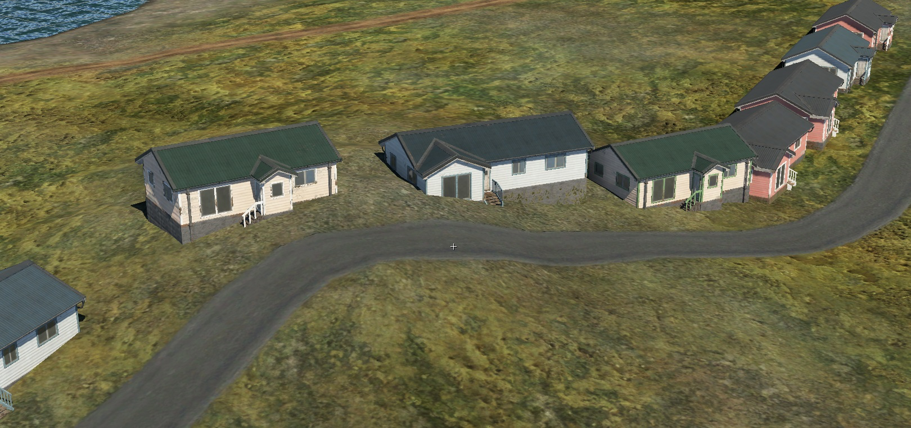
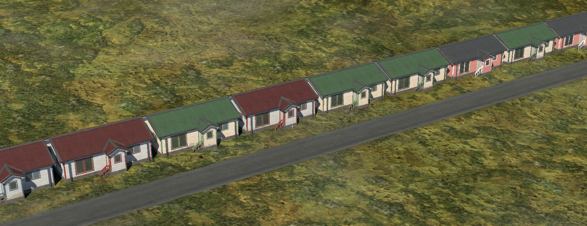

spline.blk
Blocks and Block Parameters
loft{}
Procedural transparency independent of spline control points.
randomOpacityMulAcross:p2=1,0.2: Random transparency variation across the spline.randomOpacityMulAlong:p2=1,0.2: Random transparency variation along the spline:The first number indicates the overall reduction in the heightmap of the spline texture.
The second number indicates the delta change in the heightmap of the spline texture.
This feature allows for adding variation to roads and sidewalks. For example, sand may randomly appear, blending with the tile pattern.
name:t="afg_road_c": The name of the spline.matName:t="afg_road_c": The material reference for the spline.loftLayerOrder:i=0: Rendering layer order. The spline with the highestivalue is rendered last.subdivCount:i=0: Linear subdivision between spline points (higher values create smoother transitions).shapeSubdivCount:i=0: Linear subdivision of the loft geometry relative to the spline’s width, for example:
shapeSubdivCount:i=8
shapeSubdivCount:i=0 (or 1)


flipUV:b=0: Swaps theuandvchannels in the UVW mapping.vTile:r=1.0: Texture scaling along the spline width, for example:
vTile:r=1.0
vTile:r=2.0
vTile:r=0.5


uSize:r=10.0: Texture scaling along the spline length.The ratio of
uSizetovTileis directly influenced by the parameters in theshape{}block.extrude:b=0: When set to1, the loft geometry is extruded (gains thickness)Note
This parameter currently has no effect.
cullcw:b=0: Inverts the spline normals.offset:p2=0, 0: Offsets the loft geometry relative to the spline:The first value offsets the loft relative to the spline width.
The second value offsets the loft vertically relative to the spline:


placeAboveHt:r=100: Distance from the heightmap to the spline where the spline projection occurs.
The following parameters apply only to lofts. If the spline only projects a texture and is not baked, this section can be omitted. If this block is enabled, a check will always be performed, potentially causing long load times (up to several minutes) in the daEditor.
roadBehavior:b=0: Enables the road behavior block. If disabled, the loft is placed directly onto the landscape mesh. This setting is rarely needed (95% of cases).htTestStep:r=100: Number of points between spline control points where conditions forfollowHillsandfollowHollowswill be checked. Cannot be zero (could crash the daEditor).followHills:b=0: Ensures the loft is not drawn beneath hills (lifts the loft to match hill height when enabled).followHollows:b=0: Ensures the loft is not drawn over depressions (lowers the loft to match the depth when enabled).maxHerr:r=1.5: (Needs clarification).roadTestWidth:r=4.0: Distance from the center of the spline where conditions of this block are tested.curvatureStrength:r=0: Controls the influence of spline curvature on loft geometry subdivision.minStep:r=1: Minimum distance between subdivisions, in meters.maxStep:r=1000: Maximum subdivision distance, in meters.
Examples:
curvatureStrength:r=1,minStep:r=1,maxStep:r=100: Subdivides the loft where needed based on spline curvature, reducing unnecessary triangles:
curvatureStrength:r=0,minStep:r=1,maxStep:r=4: Evenly spaced loft subdivisions, independent of spline curvature.curvatureStrength:r=0,minStep:r=1,maxStep:r=1000: Optimized for splines with two points and linear interpolation.
integral_mapping_length:b=0: When set to1, calculates arc length using integration.sweepWidth:r=200: Removes render instances generated by landclasses (e.g., trees or houses intersecting with roads or riverbanks).addFuzzySweepHalfWidth:r=50: Creates a “rough” mask or scatter effect (should not exceed the value ofsweepWidth).sweep2Width:r=50: Removes render instances even generated by this spline in theobjGen{}block (useful for intersections of roads, e.g., an asphalt road with a tree-lined avenue intersecting a dirt road).
node_flags{}
renderable:b=1: Enables rendering of the loft.collidable:b=1: Enables collision for the loft.
shape{}
closed:b=0: Closes the loft’s cross-section.
The shape{} block manages the positions of the loft profile points. A minimum
of two points is required.
Example:
pt:p4= -5.0, 0.0, 1.0, 0.0where:-5.0: Offset of the point along the spline’s width, 5 meters from the center.0.0: Vertical offset of the point, relative to the spline (no vertical offset).1.0: UV coordinate shift along the spline’s length (this parameter has no effect).0.0: UV coordinate shift along the spline’s width.
Example:
pt:p4= 5.0, 0.0, 1.0, 0.0: This point is offset 5 meters in the opposite direction, with the same vertical and UV settings.


The final loft will have a width of 10 meters and be vertically aligned with the
spline’s control points (see screenshot). The ratio of vTile to uSize is
1:10 (as described above).
Example of a more complex curved profile:
pt:p4= -7.5, 0.0, 0.0, 0.0pt:p4= -5.0, 1.0, 0.0, 0.2pt:p4= 5.0, 1.0, 0.0, 0.8pt:p4= 7.5, 0.0, 0.0, 1.0


The final loft will have a width of 15 meters (ranging from -7.5 to 7.5 meters) and will be vertically aligned with the spline control points. The middle section, 10 meters wide, will be raised 1 meter above the spline.
In the example above, the triangles of the loft behave uniformly. To
differentiate the behavior of points in the loft, the group{} block is used.
Example:
group{
pt:p4= -7.5, 0.0, 0.0, 0.0
}
group{
pt:p4= -5.0, 1.0, 0.25, 0.25
pt:p4= 5.0, 1.0, 0.75, 0.75
}
group{
pt:p4= 7.5, 0.0, 1.0, 1.0
}
Grouping loft points defines their varying behavior.
Example:
group{
type:t="rel_to_collision"
pt:p4= -7.5, 0.0, 0.0, 0.0
}
group{
type:t="move_to_min"
pt:p4= -5.0, 1.0, 0.25, 0.25
pt:p4= 5.0, 1.0, 0.75, 0.75
}
group{
type:t="rel_to_collision"
pt:p4= 7.5, 0.0, 1.0, 1.0
}

{kind=link}
{kind=link}
{kind=link}
{kind=link}
{kind=link}
{kind=link}
The resulting loft consists of three groups. The vertical positions of the
middle group’s points match the lowest vertical coordinate of the spline’s
control points (type:t="move_to_min"). The two outer groups are “dropped” onto
the collision object (in this case, the heightmap is used as the collision).
colliders{}
The colliders{} block defines the objects with which the spline collides.
use:t="HeightMap": Collides with the heightmap.use:t="(srv) Prefab entities": Collides with prefab entities.use:t="(filter) Generated by spline": Collides with objects generated by the spline itself.use:t="SGeometry": Collides with scene geometry.
obj_generate{}
The obj_generate{} block is responsible for placing objects along the
spline.
rseed:i = 111: Random seed for generating random values. It is essential to use unique seeds for differentobj_generate{}blocks; otherwise, it will cause a syntax error.setSeedToEntities:b=yes: Enables randomization for composite objects. Without this, the same random element will be generated repeatedly, instead of different ones each time.placeAtPoint:b=true: Places objects at the spline points, which is useful for precise placements, such as poles in a city. The step value (discussed below) will also apply.step:p2 = 10, 0: The first value is the distance (step) between objects, while the second value defines a range for random variation. For example:step:p2 = 10, 0: Objects are placed exactly 10 meters apart.step:p2 = 10, 2: A random value between 0 and 2 meters is added (or subtracted) to the 10-meter step, creating varied distances between objects.
{kind=link}
{kind=link}
When using the genTag system, the step must be larger than the widest object’s
width. Otherwise, the distance between objects will be determined by the step,
not the object’s width.
offset:p2 = 0.0, 0.0: The first value shifts the object’s position along the spline, and the second defines the range for random variation.placeAboveHt:r=100: Objects are projected onto the ground within a 100-meter distance.startPadding:r=3.5; endPadding:r=3.5: These parameters define the exclusion zones at the start and end of the spline, where no objects will be generated.orientation:t="normal": Controls the orientation of the objects during placement. Possible values include:orientation:t="normal": Objects are not aligned; their tilt depends on the surface’s normal beneath them.
orientation:t="fence": Objects are aligned along the spline, with no tilt.orientation:t="fence_normal": Objects are aligned along the spline, and their tilt depends on the surface’s normal.
tightFenceOrient:b=yes: Aligns objects along chords. As the name suggests, this is useful for fences. Instead of placing objects on the spline itself, they are positioned on a chord defined by the object’s width. Chords are generated along the spline until they fit within its length. If the last chord is shorter than the object’s width, the object will not be generated, leaving a gap. To avoid gaps, you can use “filler” objects by settingintegral_end_entity:b=yes.tightFenceIntegral:t="spline": Makes chords ignore spline nodes.tightFenceIntegral:t="segment": Treats each segment of the spline as a separate spline. Useful for generating fences along irregular contours.tightFenceIntegral:t="corner": Filler objects are placed only at corners.placeAtVeryStart:b=yesandplaceAtVeryEnd:b=yes: Ensures objects are placed at the very start or end of the spline, regardless of their frequency or padding.
{kind=link}
{kind=link}
{kind=link}
{kind=link}
To add unique objects at the start or end of the spline (without repetition
along the middle), use a zero step: step:p2 = 0, 0.
object{}
These parameters relate to the objects themselves, as defined in the object{}
block.
Example:
object{
genTag:t="a"
width:r=17
name:t="modern_siding_suburb_building_a"
weight:r=1
rot_x:p2=0, 0
rot_y:p2=0, 0
rot_z:p2=0, 0
offset_x:p2= 0, 0
offset_y:p2= 0, 0
offset_z:p2= 12, 0
scale:p2=1.0, 0.0
yScale:p2=1.0, 0
}
Where:
genTagSeq:t="a": The sequence (pattern) of objects used for placement.genTagSeq:t="a": Only objects withgenTag:t="a"will be placed. If there are multiple objects with the same tag, they will be randomly selected, and their selection frequency is controlled byweight. If the sequence contains multiple identical tags (e.g.,genTagSeq:t="aaaaaaa"orgenTagSeq:t="a"), the result is the same.genTagSeq:t="ab": Alternates between objects withgenTag:t="a"andgenTag:t="b".genTagSeq:t="abbccaccabcca": Alternates between objects with four differentgenTags.
Examples:
genTagSeq:t="a"genTagSeq:t="ab"
genTagSeq:t="abc"
width:r=17: Distance between consecutive objects of the current type (17 meters in this case).name:t="modern_siding_suburb_building_a": Reference to the object.weight:r=1: The probability (frequency) of selecting this object when randomly chosen from a group of objects with the samegenTag.rot_x, rot_y, rot_z: Rotation of the object in three planes with a random value.offset_x, offset_y, offset_z: Random offsets along the three axes.scale:p2: Uniform scale with a random value.yScale:p2: Vertical scale with a random value.integral_end_entity:b=yes: Marks the object as a “filler” when usingtightFenceOrient. This object will be scaled or stretched to fit the remaining spline length. This parameter only affects the last object in a sequence.
{kind=link}
Objects marked with integral_end_entity may not be generated (if their
genTag is not used in genTagSeq) but will still be used as fillers at the
end of the spline.
For correct operation and to avoid excessive distortion, it is recommended to
create multiple filler objects. Typically, in addition to the main object, you
should have three-quarter, half, and quarter-length versions. To allow scaling,
specify values in the xzScale:p2 parameter.

Shape to Loft HDA
The script, you can download here
dgr_shape_to_loft.hda,
converts a polygonal shape into the coordinates of loft points, allowing these
values to be substituted into a spline class.
The tool is designed to facilitate the translation of polygonal geometry into a usable format for lofting, enabling smoother integration of custom shapes into spline-based workflows.
Loft Geometry Visualization Setup
To visually display the loft geometry in the editor and adjust the parameters:
Open the
*.mat.blkfile and setrender_landmesh_combined=0torender_landmesh_combined=1.Open the
*.spline.blkfile and press Ctrl + S to apply the changes made to*.mat.blk.
The wireframe of the loft geometry will then be visible by pressing F3.